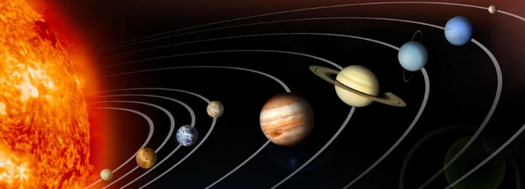
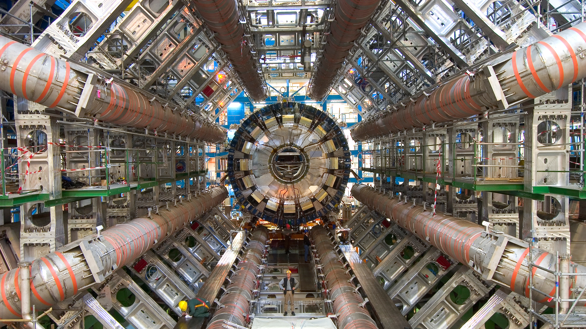
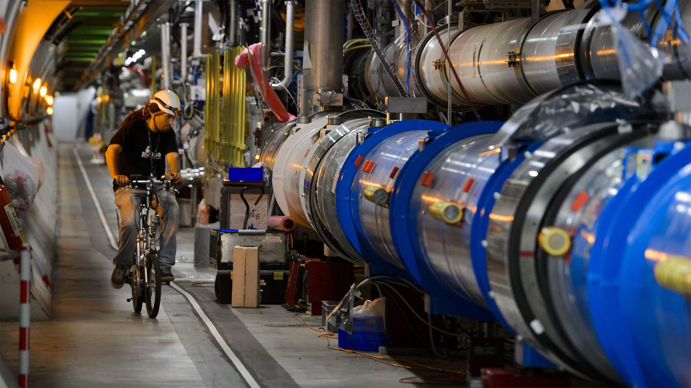
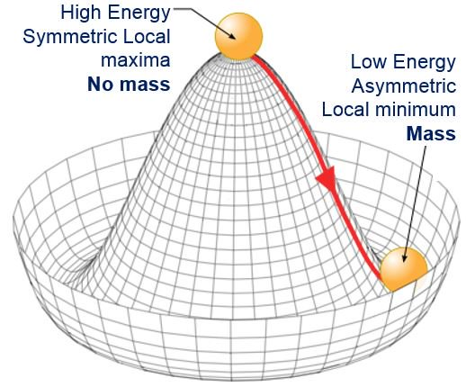
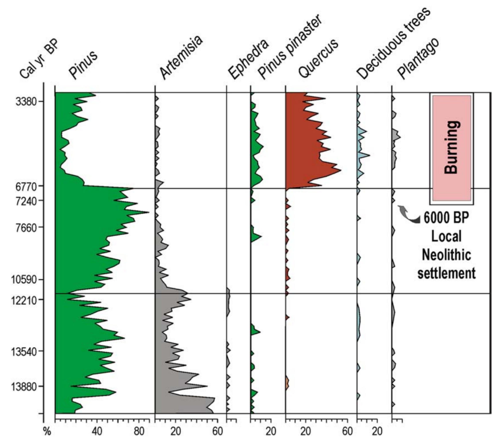
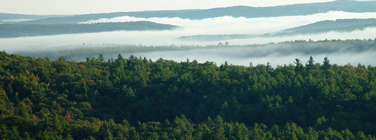
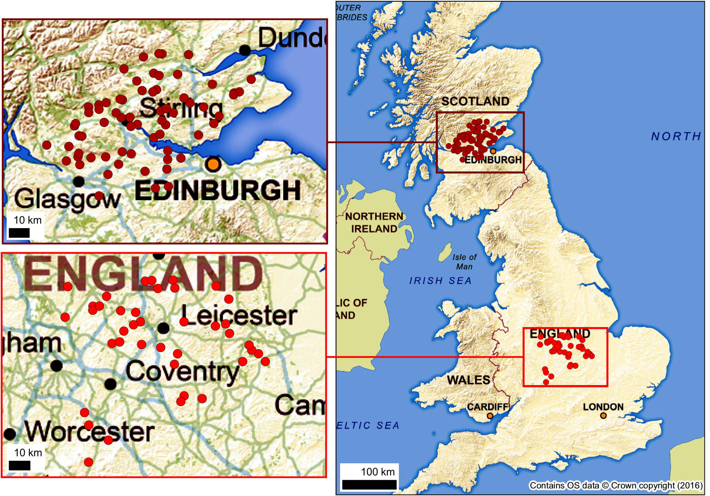
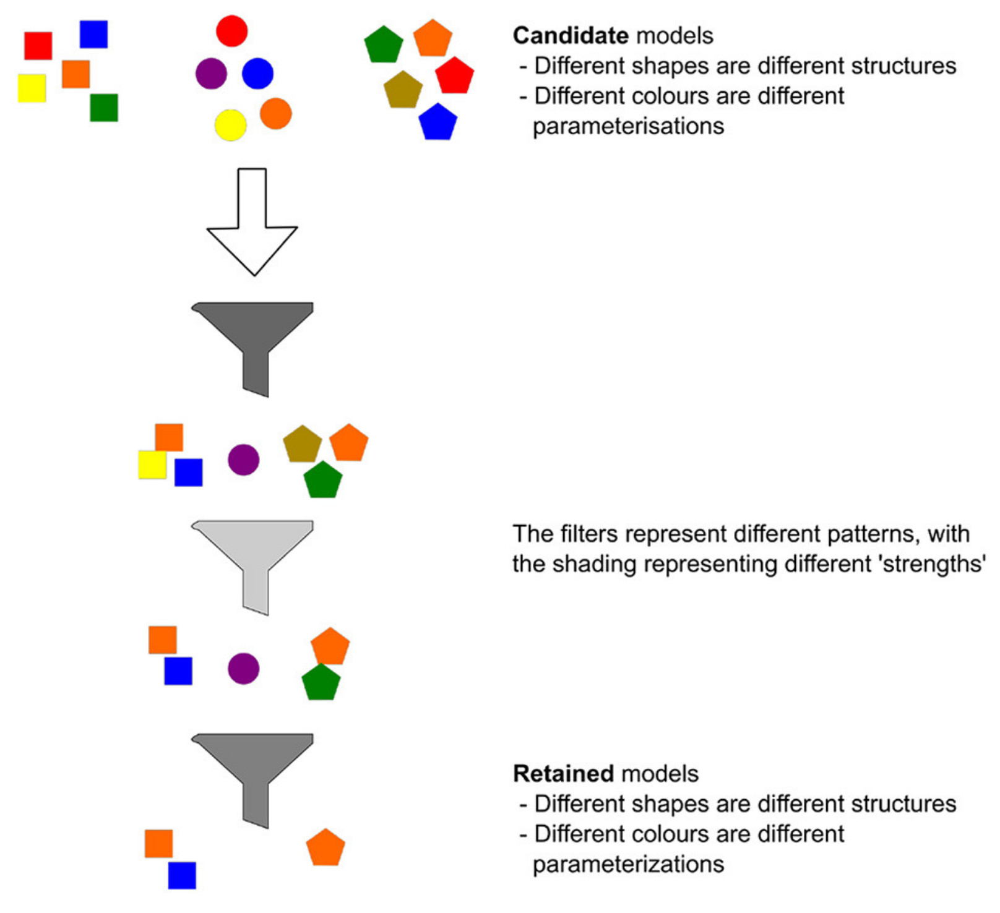

<!doctype html>
<html lang="en">

	<head>
	  <meta charset="utf-8">

	  <title>Learning from models</title>
	  
	  <link rel="stylesheet" href="css/reveal.css">
	  <link rel="stylesheet" href="css/theme/simple.css" id="theme">

	  <link rel="stylesheet" href="lib/css/zenburn.css">

	  <style>
	    .parent {
	    position: relative;
	    top: 0;
	    left: 0;
	    }
	    .image1 {
	    position: absolute;
	    top: 0;
	    left: 0;
	    }
	    .image2 {
	    position: relative;
	    top: 110px;
	    left: 250px;
	    }
	  </style>
		
	</head>

	<body>

		<div class="reveal">

		  <div class="slides">
                    <!-- Slides are separated by newline + three dashes + newline, 
			 vertical slides identical but two dashes -->
                    <section data-markdown data-separator="^\n---\n$"
			     data-separator-vertical="^\n--\n$"
			     data-separator-notes="^Note:">
                      <script type="text/template">
			## Learning from models
			
			### Andrew Lane
			#### andrew.lane@kcl.ac.uk

			---

			### Why do scientists build models?

			--

			### Why do scientists build models?

			- Prediction

			- Communication

			- Explain observations

			- Motivate experimental design

			Note:

			prediction: risk, planning (weather), obvious
			applications in economics

			communication: maps, photographs, schematics
			
			--

			### Why do scientists build models?

			- Prediction

			- Communication

			- **Explain observations**

			- **Motivate experimental design**

			Note:

			I'm going to focus on the bottom two because I think
			they highlight an interesting point about how the use
			of models varies between theoretical physics and in the
			earth sciences

			---

			### Explain observations

			

			Note:

			explaining existing data is a fundamental application
			of science. Our explanation of why we go through a
			cycle of light and dark once a day involves model of
			earth turning on its axis.


			Model of solar system explaining day and night

			Complexity means we can't use mathematical analysis to
			derive insights from first principles.

			---

			### Motivate experimental design

			
			<div class="parent">

			  

			  
			</div>


			--

			### Motivate experimental design

			

			Note:

			Reactions are complicated but not complex.

			Yes lots of background theory goes into understanding
			how particles couple to the potential etc, but part of
			the reason for it being a useful theory was that it was
			easy to understand and made a measurable prediction:
			the mass of the boson responsible for coupling the
			higgs field to matter.

			- Difficult to write simple analytical expressions
			describing complex systems because of interacting
			terms.

			- E.g. Bololoubov transformation

			It is mysterious how QM always seems to have an answer
			for things like this. Makes me think it's a distraction
			orchestrated by the aliens running our simulation to
			stop us getting to the bottom of everything.

			An electrical current is an uncountable number of
			identical particles interacting with an electromagnetic
			field. Effects of interactions with each other and the
			other particales in conductors are negligible.

			The fact that mathematics has proved so useful in
			solving problems in physics since the 17th century is
			extrorinary, but it can become unwieldy as we start
			trying to represent complex systems (end up getting
			lots of terms)

			Typical physical system (think of a test particle in a
			field). Lunatics like Joe Basheen, Davide and Jason
			find ways of working on problems in many-body quantum
			mechanics

			---

			### Modelling in Earth science vs (Theoretical) Physics

			---

			### Comparing first principles

			__Tobler's First law of Geography__

			"everything is related to everything else, but near
			things are more related than distant things."

			Note:
			- lack of reference to quantity
			- COMPLEXITY HAS PRECLUDED DEVELOPMENT OF THEORY

			--

			### Comparing first principles

			__Tobler's First law of Geography__

			"everything is related to everything else, but near
			things are more related than distant things."

			----			

			__First law of thermodynamics__

			$\Delta U = Q - W $

			--

			### Comparing first principles

			__Tobler's First law of Geography__

			"everything is related to everything else, but near
			things are more related than distant things."

			
			<span style="color:red">COMPLEXITY</span>
			

			----


			__First law of thermodynamics__

			$\Delta U = Q - W $

			<span style="color:green">MATHEMATICAL DEDUCTION</span>


			---

			### Process and pattern

			Often in Earth science we have observe __patterns__ but
			don't have a clear understanding of the underlying
			__process__

			--

			### Process and pattern

			

			(Carrion et al. 2010)


			---

			### Difficulty of direct experimentation

			Note:

			Spatio-temporal scale over which processes play out

			Expense, risk (wildfire)

			--

			### Harvard Forest

			

			- 12 km${}^2$ of Massachusetts forest 
			- Owned and managed by Harvard University since 1907

			Note:

			- Area of forest: 12 km^2
			- Started in 1907
			- In Massachusetts
			- Owned and run by Harvard University
			- Research includes:
			  + Biodiversity Studies
			  + Conservation and Management
		  	  + Ecological Informatics and Modelling

 			- one particular ecosystem, not repeatable

			- Expense: okay if you're Harvard university, but not
			really an accessible approach for most people.

			--

			### WrEN project
			"Long-term, large-scale natural experiment"

			

			(Watts et al. 2016)

			Note:

			Woodland Creation and Ecological Networks

			consider size, age and connectivity of woodlands on
			biodiversity
			
			Relies on knowledge of ecological histories of each of
			the study sites.

			---

			### Generative modelling

			- Represent underlying processes, respecting causality

			- E.g. Cellular Automata and Agent Based Modelling

			Note:

			- Distinguish from _discriminative_ modelling
			(e.g. statisical models)


			--

			### Pattern Orientated Modelling

			

			(Perry et al. 2016)

			---

			### andrew.lane@kcl.ac.uk

			---

			## Extras

			--

			### Observation-led physics: the CMB

			

			Note:

			The best example of observation leading theory in
			modern physics is the discovery of the CMB by Arno
			Penzias and Robert Wilson in 1964 .

			This was the observation for which the Big Bang was
			deemed by consensus to be the 'smoking gun', i.e. best
			explanation by such an extent that the last 13.8
			billion years of the universe's history are thought of
			as basically accounted for.

			- Pidgeon shit in the antenna

			
		      </script>

		      <!--
			### Theory leading experiment
			- CERN
			- Compare cost of cern (considering motivating theory) and
			no. Experiments they'll do there with back of envelope
			calculation of cost of doing a live experiment using
			wildfire (land burned, no. people to evacuate)

			### Discriminative vs Generative modelling
			- Perry2016
			- Contrast discriminative model in rare events to
			Peterson2002.
			-->

            </div>
		</div>

		<script src="lib/js/head.min.js"></script>
		<script src="js/reveal.js"></script>

		<script>

			Reveal.initialize({
				controls: true,
				progress: true,
				history: true,
				center: true,

				// Optional libraries used to extend on reveal.js
				dependencies: [
			{ src: 'lib/js/classList.js',
			condition: function() { return !document.body.classList; } },

			{ src: 'plugin/markdown/marked.js',
			condition: function() { return !!document.querySelector(
			'[data-markdown]' ); } },

			{ src: 'plugin/markdown/markdown.js',
			condition: function() { return !!document.querySelector(
			'[data-markdown]' ); } },
			
			{ src: 'plugin/highlight/highlight.js',
			async: true, callback: function() {
			hljs.initHighlightingOnLoad(); } },

			{ src: 'plugin/notes/notes.js' },

			{ src: 'plugin/math/math.js', async: true }

			],

			math: {
			mathjax:
		'https://cdnjs.cloudflare.com/ajax/libs/mathjax/2.7.0/MathJax.js',

			config: 'TeX-AMS_HTML-full'  // See http://docs.mathjax.org/en/latest/config-files.html
			}
			});

		</script>

	</body>
</html>
